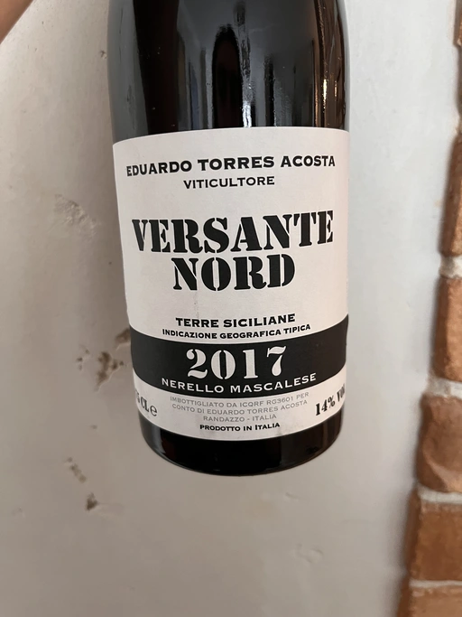

- Type
- Red Still, Dry
- Producer
- Eduardo Torres Acosta
- Vintage
- 2017
- Location
- Italy, IGP Terre Siciliane
- Grapes
- Nerello Mascalese
- Alcohol
- 14
- Sugar
- 0
- Price
- 870 UAH, 680 UAH
- Cellar
- N/A
Producer
Rising winemaker from Etna. Started from helping his father on winery, then worked on Arianna Occhipinti winery. Now he produces wines under his own label. His vineyards are mostly located on high altitudes - 700-950 meters. Before 2018 he produced his wines on Arianna Occhipinti winery.
Ratings
2020-03-28 - 8.50
Nerello Mascalese from Eduardo Torres Acosta. Grapes grow on the North Side of mount Etna on 750-950m altitude. Cherry, bonfire smoke, undergrowth, heap of autumn leaves. Tasty and flavourful. Sweet cherry dominates. Round and well balanced with medium+ acidity and medium tannin. Drinkable and understandable. This wine is a noble sweet cherry with some wild roots. Definitely worth trying.
2022-10-02 - 8.00
More than two years have passed since I tasted this wine and vintage. More developed than before (obviously?). Spicy bouquet: cherry, smoke, underbrush, truffles (this is new), musk and anise. Smooth medium-full body with tired yet still dry tannin. Fruity and spicy flavours with a long and warm aftertaste. Friendly wine with good value.